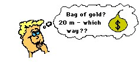
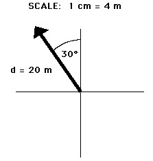

Vectors and Directions
A variety of quantities that we may study in the physical world include distance, displacement, speed, velocity, acceleration, force, mass, momentum, energy, work, power, etc. All these quantities can be divided into two categories - vectors and scalars. A vector quantity is a quantity that is fully described by both magnitude and direction. On the other hand, a scalar quantity is a quantity that is fully described by its magnitude. The emphasis of this unit is to understand some fundamentals about vectors and understand some situations in which they may be applied.
Examples of vector quantities that you may have previously heard of include displacement, velocity,acceleration, and force. Each of these quantities are unique in that a full description of the quantity demands that both a magnitude and a direction are listed. For example, suppose your teacher tells you "A bag of gold is located outside the classroom. To find it, displace yourself 20 meters." This statement may interest you; yet, there is not enough information included in the statement to find the bag of gold. The displacement required to find the bag of gold has not been fully described. On the other hand, suppose your teacher tells you "A bag of gold is located outside the classroom. To find it, displace yourself from the center of the classroom door 20 meters in a direction 30 degrees to the west of north." This statement now provides a complete description of the displacement vector - it lists both magnitude (20 meters) and direction (30 degrees to the west of north) relative to a reference or starting position (the center of the classroom door). Vector quantities are not fully described unless both magnitude and direction are listed.
